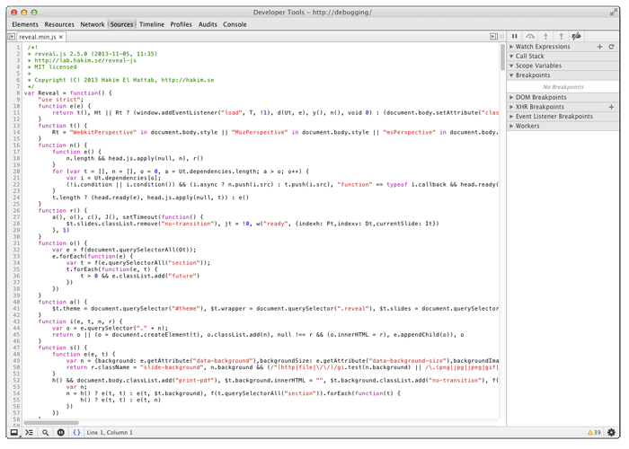

<!doctype html>
<html lang="en">

	<head>
		<meta charset="utf-8">

		<title>reveal.js - The HTML Presentation Framework</title>

		<meta name="description" content="A framework for easily creating beautiful presentations using HTML">
		<meta name="author" content="Hakim El Hattab">

		<meta name="apple-mobile-web-app-capable" content="yes" />
		<meta name="apple-mobile-web-app-status-bar-style" content="black-translucent" />

		<meta name="viewport" content="width=device-width, initial-scale=1.0, maximum-scale=1.0, user-scalable=no">

		<link rel="stylesheet" href="css/reveal.min.css">
		<link rel="stylesheet" href="css/theme/custom-night.css" id="theme">

		<!-- For syntax highlighting -->
		<link rel="stylesheet" href="lib/css/zenburn.css">

		<!-- If the query includes 'print-pdf', use the PDF print sheet -->
		<script>
			document.write( '<link rel="stylesheet" href="css/print/' + ( window.location.search.match( /print-pdf/gi ) ? 'pdf' : 'paper' ) + '.css" type="text/css" media="print">' );
		</script>

		<!--[if lt IE 9]>
		<script src="lib/js/html5shiv.js"></script>
		<![endif]-->
	</head>

	<body>

		<div class="reveal">

			<!-- Any section element inside of this container is displayed as a slide -->
			<div class="slides">
				<section data-markdown>
					<script type="text/template">
						# Browser Debugging 101

						#### *Or: How I Learned to Stop Worrying and Love the Browser Inspector*


						---


						#### Corey Peterson
						#### UCF Center for Distributed Learning
					</script>
				</section>
				<section data-markdown>
					<script type="text/template">
						## Debugging: A Fact of Life

						#### (Like taxes and brushing your teeth)
					</script>
				</section>
				<section data-markdown>
					<script type="text/template">
						## Two Types of Code
						#### ... Determine what gets displayed in your browser:

						* **Server-side**: executed on the server, output is sent to the browser *(ex: PHP, Python, Ruby)*

						* **Client-side**: executed locally by the browser itself *(ex: Javascript, CSS)*

					</script>
				</section>
				<section>
					<section data-markdown>
						<script type="text/template">
							## Server- and Client-side Code
							### Have different methods for debugging:
						</script>
					</section>
					<section data-markdown>
						<script type="text/template">
							**Server** : Outputting statements directly to the webpage
							```php
							$array = [
								"cat" => "meow",
								"dog" => "woof",
								"fish" => "blub blub",
								"fox" => "???"
							];

							echo("debugging array:");
							print_r($array);
							```

							Which results in:

							```
							debugging array:
							Array
							(
							    [cat] => meow
							    [dog] => woof
							    [fish] => blub blub
							    [fox] => ???
							)
							```
							Many times, this isn't a viable option. Plus it's pretty sloppy.
						</script>
					</section>
					<section data-markdown>
						<script type="text/template">
							**Server** : Logging trace statements to a file

							```php
							$fruit = "banana";
							$integer = 2;
							$result = $fruit + $integer;
							Log::debug("banana plus two equals: ".$result);
							```
							Most popular PHP frameworks implement a log class to simplify logging trace statements. The above example uses **FuelPHP**.

							The log file would be updated with the following:

							```
							DEBUG - 2013-11-08 21:05:04 --> banana plus two equals: 2
							```
						</script>
					</section>
					<section data-markdown>
						<script type="text/template">
							**Client** : Printing directly to the webpage
							```javascript
							var jebediah = {};
							jebediah.courage = 100;
							jebediah.stupidity = 50;

							if (jebediah.courage > jebediah.stupidity)
							{
								document.write("Jeb is courageous and ready to go!");
							}
							else
							{
								document.write("Jeb is terrified and ready to flee!");
							}
							```
							This is old school, and there are much better options available to you.
						</script>
					</section>
					<section data-markdown>
						<script type="text/template">
							**Client** : Using the inspector & developer tools

							

							Modern browsers have powerful built-in tools to help debug your code.
						</script>
					</section>
				</section>
				<section data-markdown>
					<script type="text/template">
						### For this presentation, we'll be focusing on client-side debugging using the browser's developer tools.

						---

						#### All modern browsers come with developer tools, most of which share certain features.

						* Chrome: Chrome DevTools
						* Firefox: Web Console (native) & Firebug
						* Safari: Web Inspector
						* Internet Explorer: F12 Developer Tools
						* Opera: Dragonfly
					</script>
				</section>
				<section>
					<section data-markdown>
						<script type="text/template">
							## A Brief Tour of the Browser Developer Toolkit

							These features are common across most browsers.
						</script>
					</section>
					<section data-markdown>
						<script type="text/template">
							The DOM (**D**ocument **O**bject **M**odel) Inspector

							

							*Browser: Firefox*
						</script>
					</section>
					<section data-markdown>
						<script type="text/template">
							The Javascript Console

							

							*Browser: Chrome*
						</script>
					</section>
					<section data-markdown>
						<script type="text/template">
							The Network Profiler

							

							*Browser: Safari*
						</script>
					</section>
					<section data-markdown>
						<script type="text/template">
							The Error Console

							

							*Browser: Opera*
						</script>
					</section>
				</section>
				<section data-markdown>
					<script type="text/template">
						## The DevTools in Practice
					</script>
				</section>
				<section>
					<section data-markdown>
						<script type="text/template">
							First, some quick Javascript:

							```javascript
							var starship_enterprise = {};

							starship_enterprise.series = "TNG";
							starship_enterprise.registry = "NCC-1701-D";

							starship_enterprise.crew = [
								"Jean-Luc Picard",
								"Will Riker",
								"Geordi La Forge",
								"Worf"
								"Beverly Crusher",
								"Data"
							];

							document.getElementById("container").innerHTML = starship_enterprise.registry;
							```

							What happens when this script fails to display anything?
						</script>
					</section>
					<section data-markdown>
						<script type="text/template">
							In most cases, the console does a good job of identifying the error and offending line of code.

							

							And the line in question:

							```javascript
							"Geordi La Forge", 	// Line 11
							"Worf"				// Line 12
							"Beverly Crusher",	// Line 13
							```
							*Whoops - looks like we missed a comma.*
						</script>
					</section>
					<section data-markdown>
						<script type="text/template">
							### Perfecting Your Technique: Breakpoints & Watch Expressions

							Breakpoints allow you to pause code execution at a designated line.

							
						</script>
					</section>
					<section data-markdown>
						<script type="text/template">
							Breakpoints can become conditional:

							

							*This breakpoint will only pause execution when **i** iterates to 8.*
						</script>
					</section>
					<section data-markdown>
						<script type="text/template">
							Watch expressions allow you to inspect values of variables or expressions as they exist on the paused line of code.

							---

							*Inspecting the starship_enterprise object:*

							

							*Concatenating strings:*

							
						</script>
					</section>
					<section data-markdown>
						<script type="text/template">
							And finally: javascript can be executed directly from the console.

							
						</script>
					</section>
				</section>
				<section>
					<section data-markdown>
						<script type="text/template">
							### Improving Your CSS-Fu with the Developer Tools
						</script>
					</section>
					<section data-markdown>
						<script type="text/template">
							Highlighting elements in the inspector provides a breakdown of their associated styles.

							---

							### An h3 element like this one will have the following styles:

							

							*Don't like what you see? You can edit, add, or hide styles directly from here.*
						</script>
					</section>
					<section data-markdown>
						<script type="text/template">
							New style rules can be added in addition to editing existing ones.

							

							*Note that any changes made in the inspector aren't saved to existing stylesheets - the changes will be lost when the page is reloaded.*
						</script>
					</section>
					<section data-markdown>
						<script type="text/template">
							Lastly, you can view and edit the box model directly from the inspector.

							
						</script>
					</section>
				</section>
				<section>
					<section data-markdown>
						<script type="text/template">
							## What about mobile browsers?

							Both mobile Chrome and Safari provide virtual and remote debugging features.

							*Windows phone and IE10 do not provide an analagous debugging solution, unfortunately.*
						</script>
					</section>
					<section data-markdown>
						<script type="text/template">
							This presentation will demo debugging mobile Chrome.

							Instructions for debugging mobile Safari are [available here.](http://webdesign.tutsplus.com/tutorials/workflow-tutorials/quick-tip-using-web-inspector-to-debug-mobile-safari/)

							---

							The process is easy and only requires a development machine running Chrome, an Android device running Chrome, and a USB cable.

							You will need to install the [ADB Chrome Extension](https://chrome.google.com/webstore/detail/adb/dpngiggdglpdnjdoaefidgiigpemgage) on your development machine.
						</script>
					</section>
					<section data-markdown>
						<script type="text/template">
							* Enable USB debugging on your Android device.
							* Connect the device to your development machine and start up the Chrome app.
							* In the Chrome app on your device, go to *Settings* > *Developer Tools* and enable *USB Web Debugging*.
							* On your development machine, click the ADB extension icon and select *Start ADB*. The icon should update with a number indicating the number of connected devices (in this case, 1).
							* Click the icon again and select *View Inspection Targets*. A new tab will open with your device(s) and the tabs open on each. Selecting *inspect* for a tab will open a browser inspector window.
							* All set! Debugging a page in mobile Chrome is identical to working with one on your development machine of choice.
						</script>
					</section>
					<section data-markdown>
						<script type="text/template">
							If you don't have an Android device, you can test mobile Chrome virtually using the *overrides* feature in DevTools.

							

							Click the Settings gear on the bottom-right of the DevTools window, and select *Overrides* on the left-hand menu.

							You can customize the user-agent and device metrics, geolocation, and device orientation to match different devices.
						</script>
					</section>
				</section>
				<section data-markdown>
					<script type="text/template">
						### Wrapping Up: Helpful Resources!

						Browser Developer Tools:

						* [Chrome DevTools Documentation](https://developers.google.com/chrome-developer-tools/)
						* [Firefox Web Console Documentation](https://developer.mozilla.org/en-US/docs/Tools/Web_Console)
						* [Safari Web Inspector Documentation](https://developer.apple.com/library/safari/documentation/AppleApplications/Conceptual/Safari_Developer_Guide/Introduction/Introduction.html)
						* [Internet Explorer Developer Tools Docs](http://msdn.microsoft.com/en-us/library/dd565628.aspx)
						* [Opera Dragonfly Documentation](http://www.opera.com/dragonfly/documentation/)

						Remote Debugging on Mobile Devices:

						* [Mobile Chrome](https://developers.google.com/chrome-developer-tools/docs/remote-debugging)

						* [Mobile Safari](http://webdesign.tutsplus.com/tutorials/workflow-tutorials/quick-tip-using-web-inspector-to-debug-mobile-safari/)
					</script>
				</section>
				<section data-markdown>
						<script type="text/template">
							## Questions? Comments?
							Find this presentation online at [cpeterson.me/debugging](http://cpeterson.me/debugging)
						</script>
					</section>
			</div>

		</div>

		<script src="lib/js/head.min.js"></script>
		<script src="js/reveal.min.js"></script>

		<script>

			// Full list of configuration options available here:
			// https://github.com/hakimel/reveal.js#configuration
			Reveal.initialize({
				controls: true,
				progress: true,
				history: true,
				center: true,

				theme: Reveal.getQueryHash().theme, // available themes are in /css/theme
				transition: Reveal.getQueryHash().transition || 'default', // default/cube/page/concave/zoom/linear/fade/none

				// Optional libraries used to extend on reveal.js
				dependencies: [
					{ src: 'lib/js/classList.js', condition: function() { return !document.body.classList; } },
					{ src: 'plugin/markdown/marked.js', condition: function() { return !!document.querySelector( '[data-markdown]' ); } },
					{ src: 'plugin/markdown/markdown.js', condition: function() { return !!document.querySelector( '[data-markdown]' ); } },
					{ src: 'plugin/highlight/highlight.js', async: true, callback: function() { hljs.initHighlightingOnLoad(); } },
					{ src: 'plugin/zoom-js/zoom.js', async: true, condition: function() { return !!document.body.classList; } },
					{ src: 'plugin/notes/notes.js', async: true, condition: function() { return !!document.body.classList; } }
				]
			});

		</script>

	</body>
</html>
